Tài liệu hướng dẫn sử dụng
Research — hệ thống AI hỗ trợ nghiên cứu khoa học của NEU
Một cổng duy nhất để làm nghiên cứu cùng AI: Trợ lý AI trung tâm hiểu câu hỏi bằng tiếng Việt và tự gọi đúng công cụ, cùng bộ 12 công cụ nghiên cứu trải suốt vòng đời một đề tài — từ tổng quan tài liệu đến công bố.
Research là gì?
Research (truy cập tại research.neu.edu.vn) là nền tảng trí tuệ nhân tạo phục vụ hoạt động nghiên cứu khoa học tại Đại học Kinh tế Quốc dân. Nền tảng dành cho giảng viên, cán bộ nghiên cứu, nghiên cứu sinh, học viên cao học và sinh viên làm NCKH — hỗ trợ trọn vòng đời một nghiên cứu, từ tìm tài liệu, thu thập & phân tích dữ liệu, viết bài, đến tìm nơi công bố và làm thủ tục.
Hệ thống có hai phần bổ trợ nhau:
Trợ lý AI trung tâm (Chatbot)
Điểm vào bằng ngôn ngữ tự nhiên: hỏi đáp, tra cứu bài báo NEU, hội thảo – tạp chí, quỹ và quy trình biểu mẫu. Trợ lý tự chọn và gọi đúng công cụ để trả lời.
Bộ công cụ nghiên cứu
12 ứng dụng chuyên biệt (Annota, Quantis, Surveylab, Writium, BiblioMap…) nhúng ngay trong cổng, dùng chung tài khoản và dữ liệu của bạn.
Dự án nghiên cứu
Nhóm công việc, bài viết và hội thoại theo từng đề tài; mời cộng sự và chia sẻ (dành cho tài khoản đầy đủ).
Cá nhân hóa
Khai báo hồ sơ (trình độ, đơn vị, lĩnh vực) để trợ lý xưng hô đúng và gợi ý phù hợp với bạn.
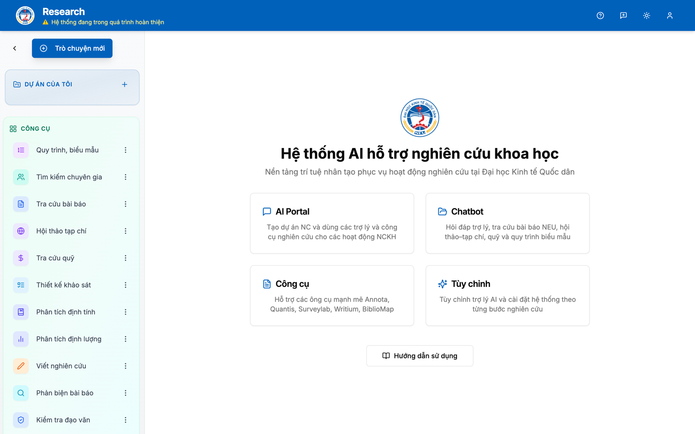
Hệ thống đang hoàn thiệnResearch đang trong giai đoạn thử nghiệm (dòng chữ cảnh báo ở đầu trang). Đôi khi một công cụ báo “Máy chủ backend tạm thời không phản hồi” — đây là sự cố tạm thời của dịch vụ đó, hãy thử lại sau hoặc liên hệ hỗ trợ.
Bạn là ai? Chọn đối tượng phù hợp
Tài liệu này phục vụ bốn nhóm đối tượng. Dùng bộ chọn đối tượng ở cột trái (hoặc bấm thẻ dưới đây) để lọc nội dung phù hợp với bạn:
Khách
Dùng thử nhanh, không cần tài khoản — chat (giới hạn) và mở công cụ.
Giảng viên / Cán bộ NC
Làm đề tài, công bố, tìm quỹ & tra quy trình — dùng đầy đủ công cụ.
Sinh viên / Học viên
Khóa luận, NCKH sinh viên: khảo sát, phân tích số liệu, viết & kiểm tra.
Nhà phát triển
Xây công cụ/agent, tích hợp function-calling. Chỉ tài khoản NEU.
Bảng so sánh quyền & khả năng
| Khả năng | 👤 Khách | 🧑🏫 Giảng viên | 🎓 Sinh viên | 🛠️ Nhà phát triển |
|---|---|---|---|---|
| Trò chuyện với Trợ lý chính | ✔giới hạn tin/ngày | ✔ | ✔ | ✔ |
| Mở & dùng 12 công cụ nghiên cứu | ✔ | ✔ | ✔ | ✔ |
| Lưu lịch sử chat | — | ✔ | ✔ | ✔ |
| Lưu bài viết / khảo sát / dữ liệu phân tích | — | ✔ | ✔ | ✔ |
| Tạo & lưu Dự án, mời cộng sự | — | ✔ | ✔ | ✔ |
| Hồ sơ & cá nhân hóa AI | — | ✔ | ✔ | ✔ |
| Cài thêm công cụ (chỉ mình) | — | ✔ | ✔ | ✔ |
| Xây dựng công cụ / agent, function-calling | — | — | — | ✔tài khoản NEU |
| Yêu cầu tài khoản | Không cần | Đầy đủ | Đầy đủ | Email @neu.edu.vn |
Giảng viên và Sinh viên đều là tài khoản đầy đủ (quyền giống nhau) — khác nhau chủ yếu ở cách dùng điển hình. “Nhà phát triển” là tài khoản NEU có thêm nhu cầu mở rộng hệ thống.
Dành cho Khách
Bạn có thể dùng thử ngay không cần tài khoản (khi quản trị bật đăng nhập Khách): bấm “Tiếp tục với tài khoản Khách” ở trang đăng nhập.
Làm được gì
- Trò chuyện với Trợ lý chính (giới hạn số tin/ngày).
- Mở & thao tác các công cụ nghiên cứu.
Chưa làm được (cần đăng nhập)
- Lưu lịch sử chat, lưu bài viết / khảo sát / dữ liệu phân tích.
- Tạo & lưu Dự án, mời cộng sự.
- Hồ sơ & cá nhân hóa.
Mở khóa đầy đủĐăng nhập bằng tài khoản Microsoft của Trường để lưu mọi thứ. Xem Đăng nhập & tài khoản.
Dành cho Giảng viên / Cán bộ nghiên cứu
Bạn là tài khoản đầy đủ. Gợi ý luồng làm việc theo vòng đời một đề tài:
- Cập nhật hồ sơ Khai Trình độ (Giảng viên / PGS / GS), đơn vị, hướng nghiên cứu để trợ lý gợi ý sát hơn.
- Tổng quan lĩnh vực Tra cứu bài báo, Trắc lượng thư mục, Tìm chuyên gia để dựng bức tranh & tìm cộng sự/phản biện.
- Làm & phân tích Thu dữ liệu và phân tích với Khảo sát · Định lượng · Định tính.
- Viết & hoàn thiện Soạn bài, kiểm tra đạo văn, tự phản biện — nhóm ③.
- Công bố & thủ tục Chọn tạp chí/hội thảo, tìm quỹ, tra quy trình — nhóm ④.
- Làm nhóm Tạo Dự án, mời cộng sự, lưu bài & hội thoại theo đề tài.
Nhanh nhấtChưa rõ dùng công cụ nào? Hỏi thẳng Trợ lý chính: “Trường có quy trình, biểu mẫu gì cho đề tài cấp cơ sở?” hay “Gợi ý tạp chí Q1 về kinh tế”.
Dành cho Sinh viên / Học viên
Phù hợp cho khóa luận, NCKH sinh viên, luận văn. Gợi ý luồng:
- Tổng quan tài liệu Dùng Tra cứu bài báo tìm nghiên cứu liên quan; hỏi Trợ lý chính về phương pháp.
- Thu thập dữ liệu Thiết kế phiếu hỏi bằng Surveylab, chia sẻ link thu phản hồi.
- Phân tích Xuất dữ liệu sang Quantis (định lượng) hoặc Annota (định tính) — xem luồng dữ liệu.
- Viết & kiểm tra Soạn báo cáo bằng Writium, chạy Kiểm tra đạo văn trước khi nộp.
- Thủ tục Tra Quy trình, biểu mẫu (có nhóm Giải thưởng SV NCKH).
MẹoCập nhật hồ sơ với Trình độ “Sinh viên/Học viên” để trợ lý trả lời phù hợp trình độ và ngành của bạn.
Đăng nhập & tài khoản
Từ trang chủ, bấm Đăng nhập (góc trên bên phải). Có ba cách vào hệ thống:
- Email & mật khẩu: dành cho tài khoản đã được cấp/đăng ký.
- Đăng nhập bằng Microsoft: một chạm bằng tài khoản Microsoft 365 của Trường (SSO) — không cần đặt mật khẩu riêng.
- Tiếp tục với tài khoản Khách: dùng thử nhanh, không cần tài khoản (nếu quản trị bật).
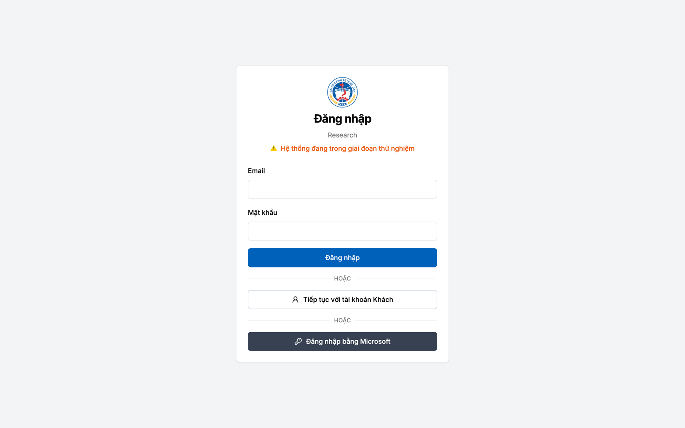
Khách và tài khoản đầy đủ khác gì nhau?
| Tính năng | Khách (không đăng nhập) | Tài khoản đầy đủ |
|---|---|---|
| Trò chuyện với Trợ lý chính | ✔giới hạn tin/ngày | ✔ |
| Mở & dùng các công cụ nghiên cứu | ✔ | ✔ |
| Lưu lịch sử chat | — | ✔ |
| Lưu dữ liệu trong công cụ (bài viết, khảo sát, dự án phân tích) | — | ✔ |
| Tạo & lưu Dự án, mời cộng sự | — | ✔ |
| Hồ sơ cá nhân & cá nhân hóa AI | — | ✔ |
| Cài thêm công cụ, Cài đặt hệ thống | — | ✔ |
Khuyến nghịHãy đăng nhập bằng tài khoản Trường (Microsoft) để lưu được bài viết, dữ liệu phân tích và dự án. Tài khoản Khách phù hợp để dùng thử nhanh — dữ liệu không được lưu khi bạn rời đi.
Giao diện tổng quan
Sau khi đăng nhập, màn hình gồm ba khu vực:
- Thanh trên cùng (header) Logo & tên hệ thống, nút Trợ giúp (?), Phản hồi, góp ý, nút đổi giao diện sáng/tối (☀/☾), và menu tài khoản (biểu tượng người).
- Thanh bên trái (sidebar) Nút Trò chuyện mới, mục Dự án của tôi, và danh sách CÔNG CỤ — 12 công cụ nghiên cứu để mở nhanh.
- Khu làm việc chính Nơi hiển thị hội thoại với trợ lý hoặc công cụ bạn đang mở.
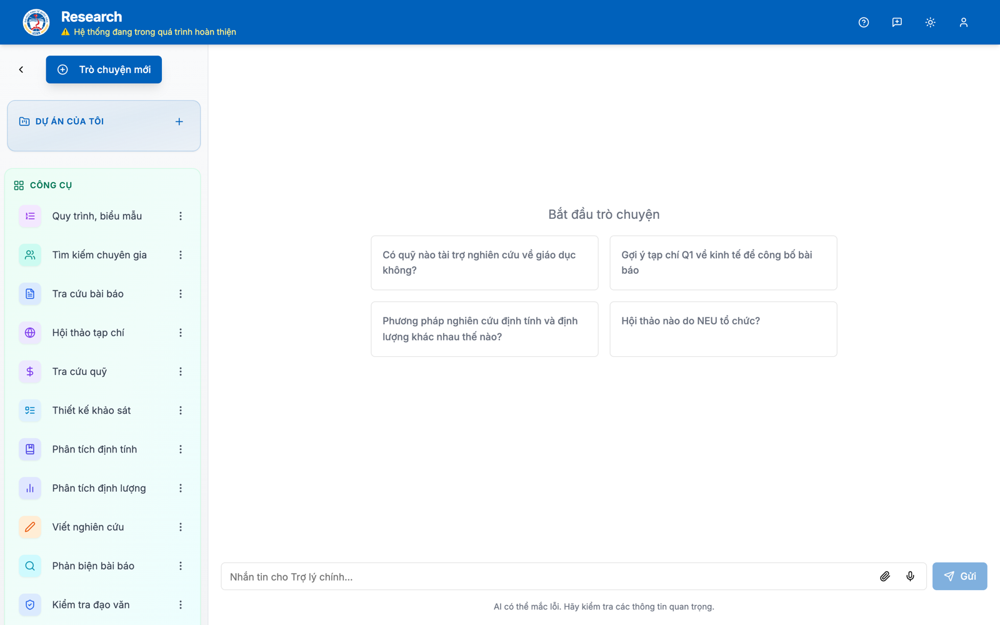
Menu tài khoản (biểu tượng người) chứa Hồ sơ và Đăng xuất; với tài khoản đầy đủ còn có thêm Cài đặt và (nếu có quyền) Trang quản trị.
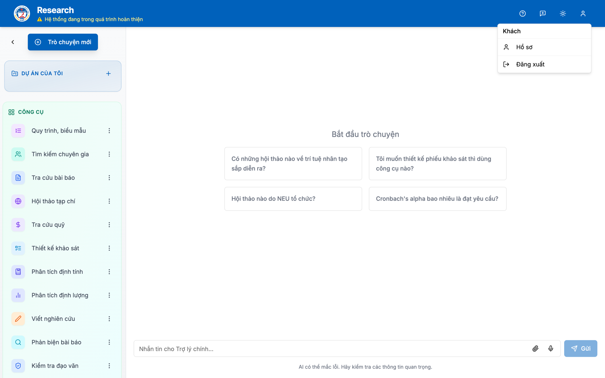
Trò chuyện với Trợ lý chính
Trợ lý chính là điểm vào bằng ngôn ngữ tự nhiên của cả hệ thống. Cứ hỏi như đang nhắn tin — trợ lý sẽ trả lời, tra cứu dữ liệu, hoặc mở đúng công cụ giúp bạn.
- Bắt đầu Bấm Trò chuyện mới (góc trái trên), hoặc chọn một câu gợi ý mẫu hiển thị khi phiên còn trống.
- Nhập câu hỏi Gõ vào ô “Nhắn tin cho Trợ lý chính…”. Nhấn Enter để gửi, Shift+Enter để xuống dòng. Có thể đính kèm tệp (📎) hoặc nhập bằng giọng nói (🎙).
- Chờ & đọc trả lời Trợ lý trả lời theo kiểu “gõ dần” (streaming). Muốn ngắt giữa chừng, bấm Dừng. Khi cần, câu trả lời chèn liên kết mở công cụ để xem/tải chi tiết.
- Tiếp tục hoặc mở phiên mới Cứ hỏi tiếp trong cùng phiên để giữ ngữ cảnh; đổi chủ đề thì bấm Trò chuyện mới.
a Câu gợi ý mẫu — bấm để hỏi ngay
Khi mở phiên mới, Trợ lý chính hiển thị vài câu mẫu bám sát bối cảnh nghiên cứu. Bấm thẳng vào một câu là gửi luôn. Ví dụ thường gặp:
- “Có những hội thảo nào về trí tuệ nhân tạo sắp diễn ra?”
- “Trường có quy trình, biểu mẫu gì cho đề tài NCKH cấp cơ sở?”
- “Gợi ý tạp chí Q1 về kinh tế để công bố bài báo.”
- “Có quỹ nào tài trợ nghiên cứu về giáo dục không?”
- “Phương pháp nghiên cứu định tính và định lượng khác nhau thế nào?”
b Các nút trong khung chat
| Nút / thao tác | Ý nghĩa |
|---|---|
| 📎 Đính kèm tệp | Gửi kèm tài liệu (PDF, Word…) để trợ lý đọc và trả lời dựa trên nội dung tệp. |
| 🎙 Micro | Nhập câu hỏi bằng giọng nói (cần cấp quyền micro cho trình duyệt). |
| Gửi / Dừng | Gửi câu hỏi; khi trợ lý đang trả lời, nút đổi thành Dừng để ngắt. |
| 👍 Hữu ích / 👎 Không hữu ích | Đánh giá mỗi câu trả lời — giúp nhóm phát triển cải thiện chất lượng. |
| Sao chép | Chép nội dung câu trả lời để dán ra nơi khác. |
c Lịch sử trò chuyện
Với tài khoản đầy đủ, mỗi phiên được lưu lại (dạng “Phiên chat {ngày}”). Bạn có thể:
- Mở lại phiên cũ để đọc tiếp; Tải thêm tin nhắn cũ nếu hội thoại dài.
- Đổi tên cuộc trò chuyện cho dễ tìm.
- Xóa một cuộc trò chuyện, hoặc Xóa toàn bộ lịch sử chat.
Lưu ý về độ chính xácỞ cuối khung chat luôn có dòng nhắc: “AI có thể mắc lỗi. Hãy kiểm tra các thông tin quan trọng.” Với số liệu, hạn nộp, quy định — hãy đối chiếu lại với công cụ nguồn hoặc văn bản chính thức. Tài khoản Khách không lưu lịch sử chat.
Trợ lý tự gọi công cụ (điểm nổi bật)
Bạn không cần nhớ nên mở công cụ nào. Trợ lý chính hiểu ý định và xử lý theo hai cách:
- Mở đúng công cụ: khi bạn nói “tôi muốn phân tích số liệu”, “thiết kế phiếu khảo sát”… trợ lý nhận diện và mở thẳng công cụ tương ứng.
- Tự tra dữ liệu ngay trong chat (function-calling): với một số câu hỏi, trợ lý gọi trực tiếp dữ liệu của công cụ rồi trả lời luôn — không cần bạn mở app.
Ba công cụ hiện được trợ lý gọi trực tiếp:
| Bạn hỏi kiểu… | Trợ lý gọi | Kết quả |
|---|---|---|
| “Gợi ý tạp chí Q1 / hội thảo về …” | Hội thảo tạp chí | Danh sách tạp chí (NXB, Quartile, quốc gia) & hội thảo phù hợp. |
| “Có quỹ nào tài trợ nghiên cứu về …?” | Tra cứu quỹ | Các chương trình tài trợ: cơ quan, hạn nộp, mức trần. |
| “Trường có quy trình / biểu mẫu gì cho …?” | Quy trình, biểu mẫu | Danh mục quy trình – biểu mẫu NCKH, kèm liên kết tải. |
Mẹo nhỏ với dữ liệu tiếng AnhCơ sở dữ liệu tạp chí và quỹ chủ yếu bằng tiếng Anh. Bạn cứ hỏi bằng tiếng Việt — trợ lý tự dịch từ khóa lĩnh vực (ví dụ “kinh tế” → economics) trước khi tra cứu.
Cá nhân hóa theo hồ sơ
Vào menu tài khoản → Hồ sơ để khai báo thông tin. Khi đã đăng nhập, hệ thống gửi kèm hồ sơ của bạn vào ngữ cảnh để trợ lý xưng hô đúng tên và gợi ý sát nhu cầu hơn.
- Họ và tên, Trình độ (Sinh viên, Thạc sĩ, Tiến sĩ, Giảng viên, PGS, GS…), Đơn vị / Phòng ban.
- Giới thiệu ngắn về bản thân và Định hướng / Lĩnh vực quan tâm.
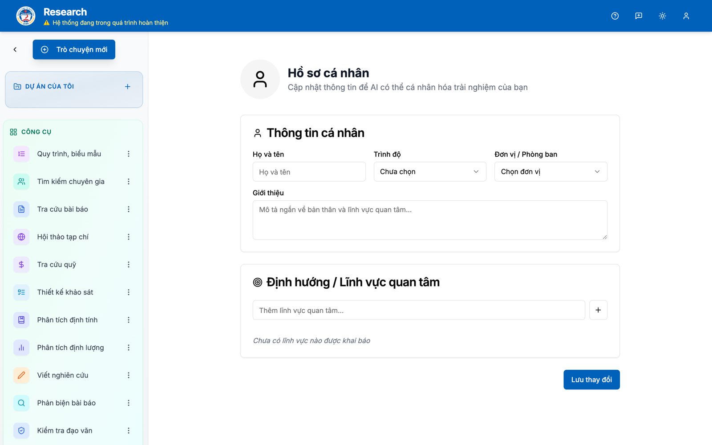
Kho công cụ & cách mở
Có ba cách mở một công cụ:
- Bấm tên công cụ ở danh sách CÔNG CỤ trong sidebar bên trái.
- Vào thẻ Công cụ ở trang chủ để mở kho ứng dụng — nơi duyệt theo danh mục, tìm kiếm và ghim.
- Hỏi Trợ lý chính — nó mở giúp bạn.
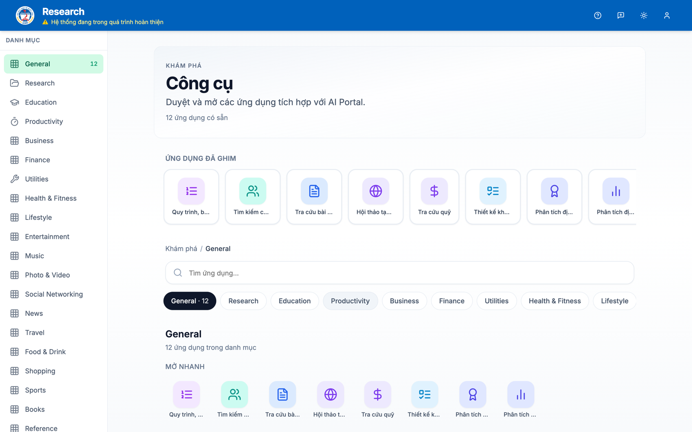
Ghim để mở nhanhBấm Ghim trên một ứng dụng để đưa nó lên đầu kho và sidebar (tối đa 10). Tài khoản đầy đủ còn có thể cài thêm công cụ từ gói cài đặt.
Chọn công cụ theo giai đoạn nghiên cứu
12 công cụ được sắp theo vòng đời một nghiên cứu. Bấm từng giai đoạn để xem nên dùng công cụ nào:
① Tìm & khám phá tài liệu, đối tác
Giai đoạn khởi động & tổng quan: tìm bài báo, dựng bức tranh lĩnh vực và tìm chuyên gia.
Tra cứu bài báo · PaperFinder
Tra kho bài báo khoa học của NEU theo từ khóa, tiêu đề, tác giả, năm hoặc tệp PDF. Xuất CSV, sao chép link truy vấn, và hỏi đáp AI trên kết quả.
Trắc lượng thư mục · BiblioMap
Trắc lượng thư mục (bibliometrics): nạp dữ liệu Scopus/WoS/CSV, vẽ bản đồ mạng từ khóa – đồng tác giả, phát hiện xu hướng và cụm chủ đề cho tổng quan hệ thống.
Tìm kiếm chuyên gia · ExpertFinder
Tra cứu chuyên gia/nhà khoa học theo tên, đơn vị, học vị, lĩnh vực — tìm người hướng dẫn, phản biện hay cộng sự; xem hồ sơ, đề tài, bài báo, sách.
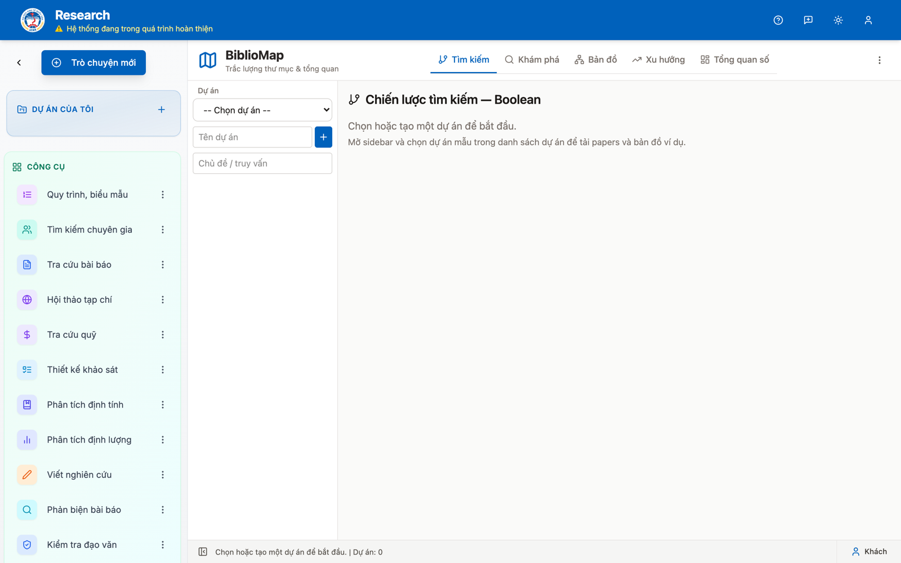
② Thu thập & phân tích dữ liệu
Giai đoạn làm nghiên cứu: thiết kế bảng hỏi, thu phản hồi, rồi phân tích định lượng & định tính.
Thiết kế khảo sát · Surveylab
Tạo bảng hỏi trực tuyến (nhiều loại câu: Likert, ma trận, NPS, xếp hạng…), chia sẻ link thu phản hồi kể cả ẩn danh, xem thống kê, rồi xuất thẳng cho Quantis/Annota.
Phân tích định lượng · Quantis
Nhập CSV và chạy toàn bộ quy trình thống kê: mô tả, kiểm định giả thuyết (t-test, ANOVA, Chi-square…), hồi quy, EFA, Cronbach’s alpha, tới ML cơ bản — xuất báo cáo chuẩn APA và script R.
Phân tích định tính · Annota
Mã hóa dữ liệu định tính kiểu NVivo: gán mã cho đoạn văn/phỏng vấn, truy vấn – trực quan hóa mã, sàng lọc PRISMA, chuyển âm thanh/video thành văn bản, xuất báo cáo.
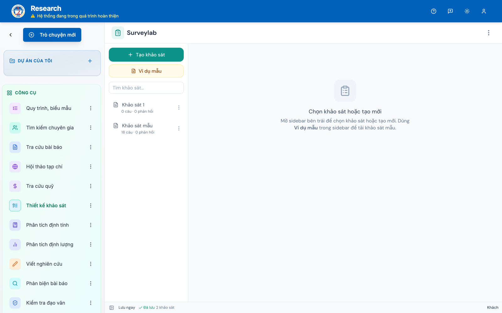
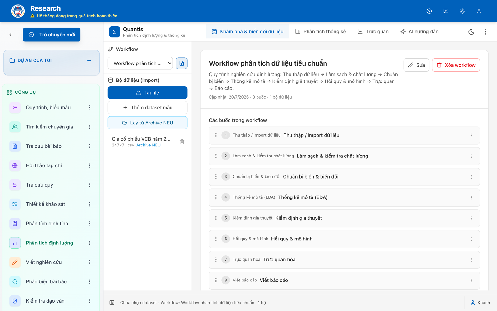
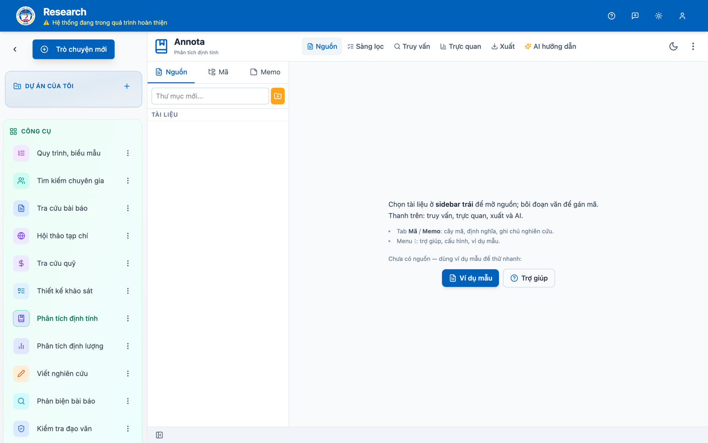
Cách dùng nhanh — Surveylab, Quantis, Annota ▸
📝 Surveylab — tạo & thu khảo sát
- Bấm Tạo khảo sát (hoặc Ví dụ mẫu để bắt đầu từ mẫu có sẵn).
- Thêm câu hỏi: đoạn ngắn/dài, chọn 1, chọn nhiều, Likert 5 mức, thang 1–10, sao, NPS, ma trận, xếp hạng, ngày/giờ… Đặt câu bắt buộc nếu cần.
- Chuyển trạng thái sang Đã phát hành rồi copy link chia sẻ (cho phép trả lời ẩn danh, giới hạn 1 phản hồi/người).
- Xem phản hồi & biểu đồ; khi đủ dữ liệu, dùng Xuất cho Quantis (CSV) hoặc Xuất cho Annota (ZIP .txt).
📈 Quantis — phân tích định lượng
- Tải file CSV (hoặc Thêm dataset mẫu). Xem hồ sơ dữ liệu: thiếu, kiểu, outlier.
- Vào tab Phân tích thống kê: mô tả (mean, SD…), kiểm định (t-test, ANOVA, Chi-square, Mann-Whitney), hồi quy (OLS, logistic), EFA, tương quan, Cronbach’s alpha.
- Vào tab Trực quan để vẽ biểu đồ; hỏi tab AI hướng dẫn nếu chưa chắc chọn kiểm định nào.
- Xuất báo cáo HTML chuẩn APA; hoặc lấy script R để tái lập.
🏷️ Annota — phân tích định tính
- Tạo thư mục và thêm nguồn (dán văn bản, tải PDF/txt, hoặc chuyển âm thanh/video phỏng vấn thành văn bản).
- Ở tab Mã, dựng cây mã; mở nguồn rồi bôi đoạn văn để gán mã (hoặc dùng Gợi ý mã trên đoạn chọn bằng AI).
- Dùng tab Truy vấn/Trực quan để đếm, so sánh, vẽ mạng mã, heat map.
- Xuất CSV/codebook; hoặc Xuất cho Quantis để phân tích hỗn hợp (mixed-methods).
③ Viết, kiểm tra & phản biện
Giai đoạn hoàn thiện bản thảo: soạn bài, kiểm tra đạo văn và tự phản biện trước khi nộp.
Viết nghiên cứu · Writium
Trình soạn thảo học thuật: viết bài báo/luận văn với cấu trúc chuẩn, công thức LaTeX, quản lý trích dẫn (APA/IEEE), lịch sử phiên bản, AI hỗ trợ, và xuất Word/PDF/BibTeX.
Kiểm tra đạo văn · PlagiarismChecker
Kiểm tra trùng lặp cho một tệp hoặc một đoạn văn dán trực tiếp. Hai chế độ: Kết quả ngay trên trang (đoạn ngắn) hoặc Xử lý từng bước (tài liệu dài, gửi kết quả qua email).
Phản biện bài báo · PaperReviewer
Tải bản thảo lên (PDF/Word/TXT/MD), AI thực hiện phản biện theo tiêu chí khoa học và trả nhận xét — giúp bạn tự đánh giá & cải thiện bài trước khi gửi tạp chí.
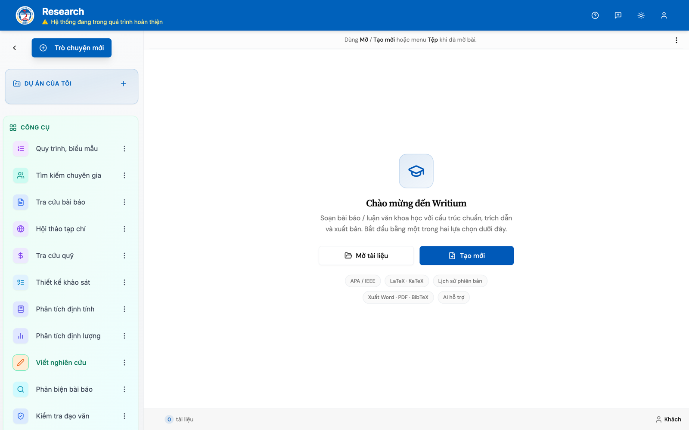
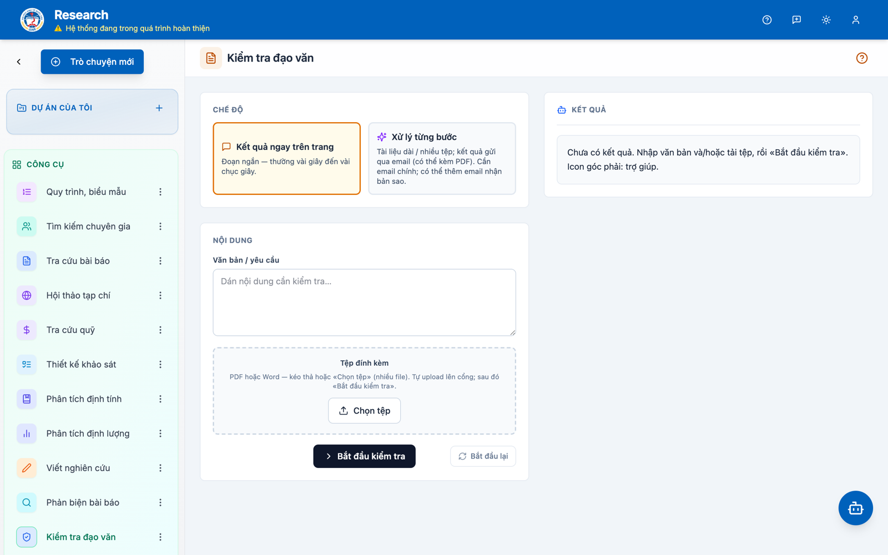
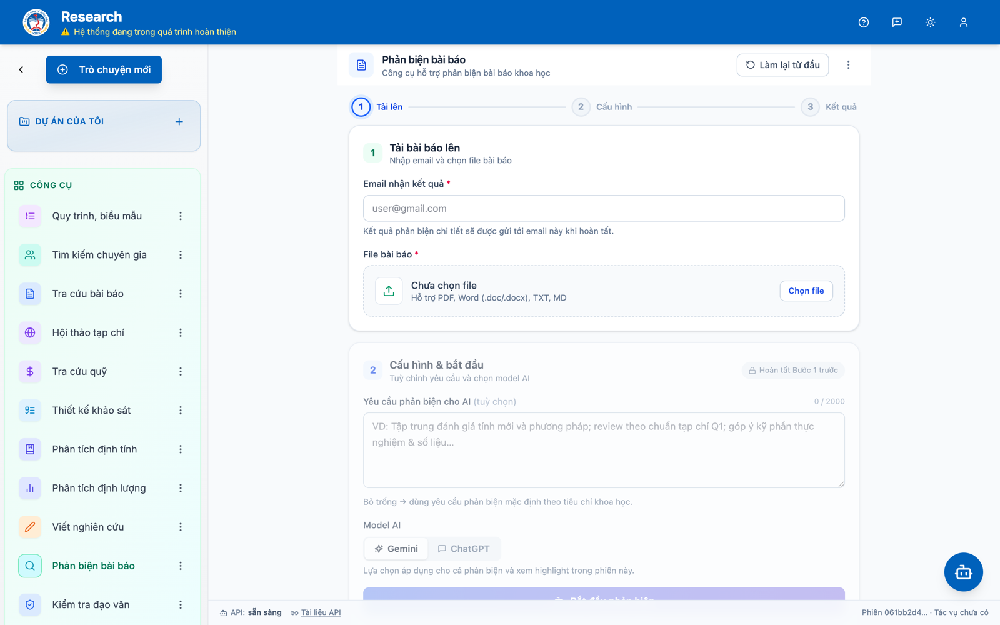
Cách dùng nhanh — Writium, Kiểm tra đạo văn, Phản biện ▸
📖 Writium — viết nghiên cứu
- Bấm Tạo mới (hoặc Mở tài liệu để mở bài đã lưu).
- Soạn nội dung: dùng thanh định dạng (tiêu đề H1–H6, danh sách, bảng, công thức LaTeX, trích dẫn khối). Phím tắt: Ctrl/⌘+S lưu, B/I/U in đậm/nghiêng/gạch chân.
- Thêm tài liệu tham khảo (References): điền journal, volume, pages, DOI; chèn trích dẫn theo APA hoặc IEEE.
- Nhờ AI hỗ trợ: cải thiện văn phong, chuẩn hóa APA, dịch, viết “response to reviewers”.
- Xuất ra Word (.docx), PDF, BibTeX; hoặc chia sẻ link. Bài viết được lưu theo tài khoản (đăng nhập để không mất).
🛡️ Kiểm tra đạo văn
- Chọn Chế độ: Kết quả ngay trên trang (đoạn ngắn) hoặc Xử lý từng bước (tài liệu dài, gửi kết quả qua email).
- Dán văn bản vào ô Nội dung, hoặc đính kèm tệp (PDF/Word).
- Bấm Bắt đầu kiểm tra; xem tỉ lệ & chi tiết trùng lặp ở khung Kết quả (đoạn ngắn thường mất vài giây đến vài chục giây).
🔍 Phản biện bài báo
- Bước 1 — Tải lên: nhập email nhận kết quả + chọn tệp bản thảo (PDF/Word/TXT/MD).
- Bước 2 — Cấu hình: (tuỳ chọn) mô tả yêu cầu phản biện, chọn model AI; bỏ trống để dùng tiêu chí khoa học mặc định.
- Bước 3 — Kết quả: theo dõi tiến độ; nhận xét phản biện chi tiết được gửi vào email.
④ Công bố, tài trợ & thủ tục
Giai đoạn đưa kết quả ra ngoài: chọn nơi công bố, tìm nguồn tài trợ và tra cứu thủ tục của Trường.
Hội thảo tạp chí · JournalConference
Tra ~32.000 tạp chí (SJR) theo lĩnh vực, xem hạng Quartile Q1–Q4, nhà xuất bản, quốc gia; và tra cứu hội thảo khoa học (gồm cả hội thảo do NEU tổ chức). Có trợ lý AI so sánh phạm vi & mức phù hợp.
Tra cứu quỹ · Funds
Tra ~1.900 quỹ/nguồn tài trợ: tìm theo lĩnh vực, xem cơ quan tài trợ, hạn nộp, mức trần kinh phí, mở liên kết gốc, và hỏi AI về quỹ.
Quy trình, biểu mẫu · Regulations
Kho quy trình, quy định và biểu mẫu NCKH của Trường (~96 tài liệu, 11 nhóm phụ lục): đề tài cấp Nhà nước/Bộ/cơ sở, hội thảo, giáo trình, NCKH sinh viên… Xem và tải mẫu đơn.
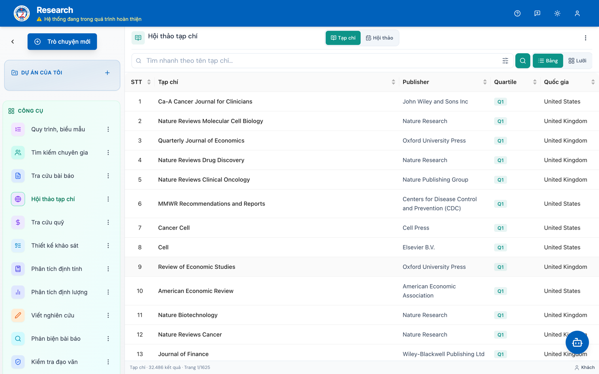
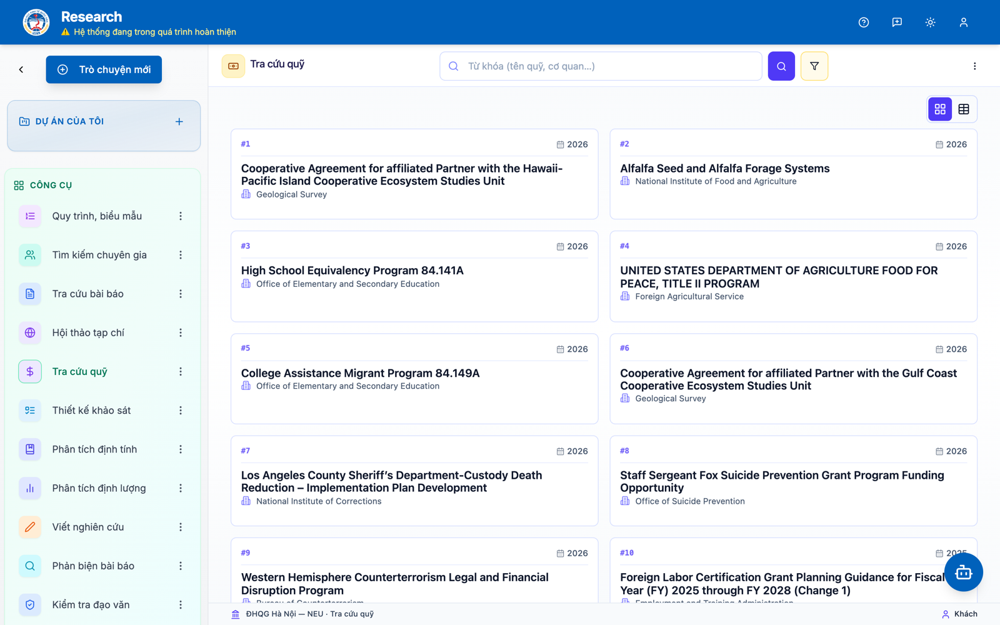
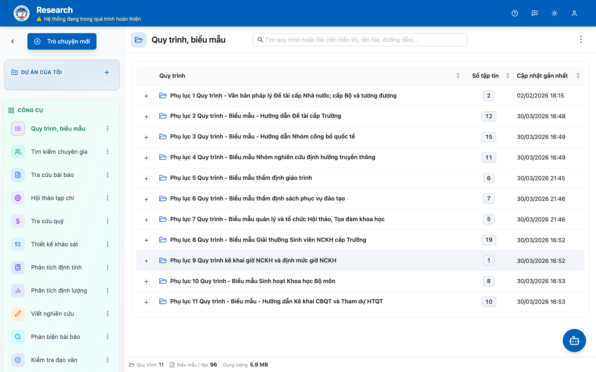
Cách dùng nhanh — Hội thảo tạp chí, Tra cứu quỹ, Quy trình biểu mẫu ▸
🌐 Hội thảo tạp chí
- Chọn tab Tạp chí hoặc Hội thảo.
- Gõ từ khóa lĩnh vực (nên bằng tiếng Anh, ví dụ economics) vào ô tìm; lọc theo Quartile (Q1–Q4), nhà xuất bản, quốc gia.
- Xem dạng Bảng hoặc Lưới; hỏi Trợ lý AI trong app để so sánh phạm vi/độ phù hợp với đề tài.
💲 Tra cứu quỹ
- Nhập từ khóa (tên quỹ, cơ quan, lĩnh vực); lọc theo Từ năm / Đến năm và trạng thái.
- Xem thẻ kết quả (cơ quan tài trợ, hạn nộp, mức trần) → bấm Mở liên kết để tới trang gốc.
- Dùng Hỏi AI về quỹ để đặt câu hỏi tự nhiên về nguồn tài trợ.
📋 Quy trình, biểu mẫu
- Duyệt 11 nhóm phụ lục hoặc gõ vào ô tìm (theo tên quy trình / tên file).
- Mở một nhóm để xem danh sách tài liệu, rồi tải quy trình/mẫu đơn cần dùng.
- Hoặc hỏi thẳng Trợ lý chính: “Trường có biểu mẫu gì cho đề tài cấp cơ sở?” — trợ lý liệt kê kèm liên kết.
Luồng dữ liệu giữa các công cụ
Điểm mạnh của Research là các công cụ nối liền nhau — dữ liệu chảy từ thu thập sang phân tích, sang viết, rất mượt:
| Từ | Sang | Dạng & mục đích |
|---|---|---|
| Surveylab | Quantis | CSV (UTF-8) — đưa phản hồi khảo sát vào phân tích định lượng. |
| Surveylab | Annota | ZIP các tệp .txt — đưa câu trả lời mở vào mã hóa định tính. |
| Annota | Quantis | CSV “mixed-methods” — nguồn × số lần xuất hiện mã, để chạy hồi quy. |
| Quantis | Writium | Đồng bộ mục “Pre-reg & tái lập” (đăng ký trước + checklist open science). |
| BiblioMap | Gephi/Pajek | Xuất GEXF/CSV để phân tích mạng nâng cao ngoài hệ thống. |
Gợi ý quy trình liền mạchSurveylab (thu dữ liệu) → Quantis / Annota (phân tích) → Writium (viết) → Kiểm tra đạo văn & Phản biện bài báo (hoàn thiện) → Hội thảo tạp chí (chọn nơi công bố).
Dự án của tôi
Với tài khoản đầy đủ, dùng Dự án để gom công việc, tài liệu và hội thoại theo từng đề tài. Trong sidebar, mở Dự án của tôi và bấm ＋ để tạo.
a Tạo một dự án
- Mở hộp thoại “Thêm dự án” Bấm ＋ ở mục Dự án của tôi.
- Điền thông tin Tên dự án, Mô tả, Tag phân loại và chọn biểu tượng cho dễ nhận biết.
- (Tuỳ chọn) Mời thành viên Thêm cộng sự bằng email để cùng làm.
- (Tuỳ chọn) Đính kèm tệp Tải lên PDF/DOCX/XLSX/CSV (tối đa 10MB/tệp) làm tài liệu nền cho dự án.
- Lưu Dự án xuất hiện trong sidebar; mở nó để chat gắn dự án, lưu bài viết và Xem chat theo dự án.
Trong một dự án, bạn có thể: lưu bài viết (từ Writium — bài chỉ lưu được khi gắn với một dự án), xem lại hội thoại theo dự án, và chỉnh sửa/xóa dự án qua menu. URL dự án mang tham số rid = mã dự án.
Chia sẻ & lời mời tham giaDự án phân biệt vai trò Chủ sở hữu và Được chia sẻ với bạn. Khi được mời, bạn thấy thông báo ở biểu tượng chuông — bấm Đồng ý tham gia để dự án vào Dự án của tôi. Tài khoản Khách không tạo/lưu được dự án.
Khảo sát & phản hồi
Đôi lúc hệ thống hiển thị một popup khảo sát mời bạn góp ý để nhóm phát triển cải thiện Research. Khảo sát không bắt buộc: bạn có thể trả lời, hoặc bấm Để sau / dấu ✕ để đóng.
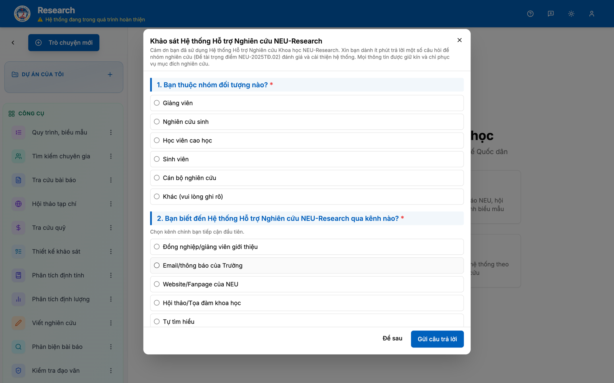
Ngoài ra, bạn luôn có thể gửi ý kiến qua nút Phản hồi, góp ý ở thanh trên cùng, hoặc đánh giá từng câu trả lời của trợ lý (Hữu ích / Không hữu ích).
Mẹo & tuỳ chỉnh
- Giao diện sáng/tối: bấm nút ☀/☾ ở thanh trên — kể cả trang hướng dẫn này cũng đổi theo.
- Ghim công cụ hay dùng (tối đa 10) để mở nhanh từ sidebar và kho ứng dụng.
- Hỏi trợ lý trước: chưa biết dùng công cụ nào? Cứ mô tả việc bạn cần — trợ lý sẽ mở đúng công cụ.
- Trong Writium: dùng phím tắt Ctrl/⌘+S để lưu, B/I/U để định dạng.
- Đăng nhập để không mất bài viết, dữ liệu phân tích và lịch sử chat.
Câu hỏi thường gặp
Tôi nên bắt đầu từ đâu? ▸
Đăng nhập (nên dùng tài khoản Microsoft của Trường), rồi mở Trợ lý chính và gõ điều bạn cần — ví dụ “gợi ý tạp chí Q1 về kinh tế” hay “tôi muốn phân tích số liệu khảo sát”. Trợ lý sẽ trả lời hoặc mở đúng công cụ.
Làm sao biết dùng công cụ nào cho việc của tôi? ▸
Xem mục Chọn công cụ theo giai đoạn ở trên, hoặc đơn giản là hỏi Trợ lý chính. Bạn không cần nhớ tên công cụ — chỉ cần mô tả việc cần làm.
Một công cụ báo “Máy chủ backend tạm thời không phản hồi” thì sao? ▸
Đó là sự cố tạm thời của dịch vụ công cụ đó (hệ thống đang trong giai đoạn hoàn thiện). Hãy thử lại sau ít phút; nếu vẫn lỗi, gửi Phản hồi, góp ý hoặc liên hệ hỗ trợ.
Dữ liệu của tôi có được lưu không? ▸
Với tài khoản đầy đủ: bài viết, khảo sát, dự án phân tích và lịch sử chat đều được lưu theo tài khoản của bạn. Với tài khoản Khách: dữ liệu không được lưu lại khi bạn rời đi.
Tôi hỏi bằng tiếng Việt, sao dữ liệu tạp chí/quỹ lại là tiếng Anh? ▸
Cơ sở dữ liệu tạp chí (SJR) và quỹ tài trợ chủ yếu bằng tiếng Anh. Bạn cứ hỏi tiếng Việt — trợ lý tự dịch từ khóa lĩnh vực sang tiếng Anh trước khi tra. Trong công cụ, bạn cũng có thể gõ trực tiếp từ khóa tiếng Anh để lọc chính xác hơn.
Tôi vừa khảo sát bằng Surveylab, giờ phân tích thế nào? ▸
Trong Surveylab, dùng Xuất cho Quantis (CSV) để phân tích định lượng, hoặc Xuất cho Annota (ZIP các tệp .txt) để mã hóa các câu trả lời mở theo hướng định tính. Xem mục Luồng dữ liệu giữa các công cụ.
Kết quả của AI có đáng tin không? ▸
AI hỗ trợ rất nhanh nhưng có thể mắc lỗi. Với thông tin quan trọng (số liệu thống kê, hạn nộp quỹ, quy định, trích dẫn), hãy đối chiếu với công cụ nguồn hoặc văn bản chính thức của Trường trước khi sử dụng.
“Trợ lý AI” bên trong một công cụ khác gì Trợ lý chính? ▸
Một số công cụ (Hội thảo tạp chí, Tra cứu quỹ, Tra cứu bài báo, Annota, Quantis, BiblioMap) có trợ lý AI riêng chạy trên đúng dữ liệu của công cụ đó — hợp khi bạn đã ở trong app. Còn Trợ lý chính ở màn Chatbot là điểm vào chung: hiểu câu hỏi rồi tự chọn/mở đúng công cụ. Không quen dùng công cụ nào thì hỏi Trợ lý chính trước.
Dùng được trên điện thoại không? ▸
Được — giao diện responsive. Tuy nhiên các công cụ nặng thao tác (Quantis, Annota, Writium, BiblioMap) sẽ dễ dùng hơn nhiều trên màn hình lớn.
Dành cho nhà phát triển
Mở rộng Research: xây công cụ / agent mới, tích hợp function-calling, tận dụng memory (RAG), cá nhân hoá, dự án, file đính kèm. Nội dung kỹ thuật bên dưới chỉ hiển thị cho tài khoản email NEU (@neu.edu.vn) và được tải khi bạn xem mục này.
Cũng có bản trang riêng: mở Hướng dẫn cho nhà phát triển ↗.
Hỗ trợ
Cần trợ giúp thêm?
- Bấm Trợ giúp (?) hoặc Phản hồi, góp ý ở thanh trên cùng của hệ thống.
- Truy cập Research tại research.neu.edu.vn.